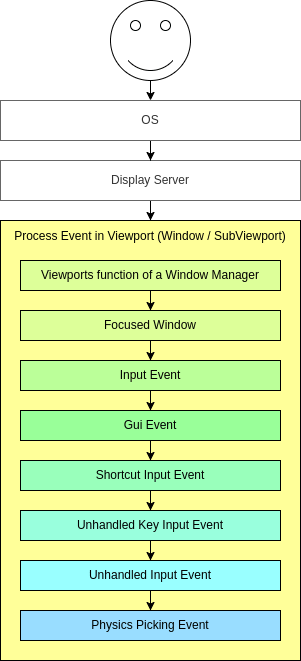
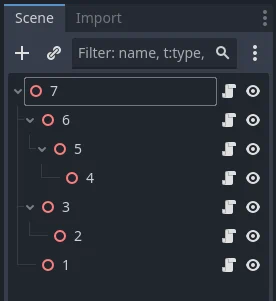

Sử dụng InputEvent
Đó là gì?
Quản lý đầu vào thường phức tạp, bất kể hệ điều hành hay nền tảng nào. Để đơn giản hóa phần nào, Godot cung cấp một kiểu tích hợp đặc biệt là InputEvent. Kiểu dữ liệu này có thể được cấu hình để chứa nhiều loại sự kiện input. Các sự kiện input đi qua engine và có thể được nhận ở nhiều nơi, tùy theo mục đích.
Đây là một ví dụ nhanh, đóng game nếu phím escape được nhấn:
func _unhandled_input(event):
if event is InputEventKey:
if event.pressed and event.keycode == KEY_ESCAPE:
get_tree().quit()
public override void _UnhandledInput(InputEvent @event)
{
if (@event is InputEventKey eventKey)
{
if (eventKey.Pressed && eventKey.Keycode == Key.Escape)
{
GetTree().Quit();
}
}
}
Tuy nhiên, sẽ gọn gàng và linh hoạt hơn nếu dùng tính năng InputMap được cung cấp sẵn, cho phép bạn định nghĩa các input action và gán cho chúng các phím khác nhau. Bằng cách này, bạn có thể định nghĩa nhiều phím cho cùng một action (ví dụ phím escape trên bàn phím và nút start trên gamepad). Sau đó bạn có thể dễ dàng thay đổi ánh xạ này trong cài đặt dự án mà không cần cập nhật code, thậm chí xây dựng tính năng ánh xạ phím dựa trên nó để game có thể thay đổi ánh xạ phím trong lúc chạy!
Bạn có thể thiết lập InputMap trong Project > Project Settings > Input Map rồi dùng các action đó như sau:
func _process(delta):
if Input.is_action_pressed("ui_right"):
# Move right.
public override void _Process(double delta)
{
if (Input.IsActionPressed("ui_right"))
{
// Move right.
}
}
Nó hoạt động như thế nào?
Mọi sự kiện input đều bắt nguồn từ người dùng/người chơi (dù có thể tạo một InputEvent và đưa ngược vào engine, điều này hữu ích cho cử chỉ). DisplayServer của từng nền tảng sẽ đọc sự kiện từ hệ điều hành, rồi đưa chúng tới Window gốc.
Viewport của cửa sổ thực hiện khá nhiều việc với đầu vào nhận được, theo thứ tự:

Nếu Viewport đang nhúng các Window, Viewport sẽ cố diễn giải sự kiện với vai trò Window-Manager (ví dụ để thay đổi kích thước hoặc di chuyển Window).
Tiếp theo, nếu một Window được nhúng đang được focus, sự kiện sẽ được gửi tới Window đó và xử lý trong Viewport của Window, sau đó được coi là đã xử lý. Nếu không có Window được nhúng nào được focus, sự kiện sẽ được gửi tới các node của viewport hiện tại theo thứ tự sau.
Đầu tiên, hàm chuẩn Node._input() sẽ được gọi ở bất kỳ node nào override nó (và chưa tắt xử lý input bằng Node.set_process_input()). Nếu có hàm nào tiêu thụ sự kiện, nó có thể gọi Viewport.set_input_as_handled() và sự kiện sẽ không lan truyền nữa. Điều này đảm bảo bạn có thể lọc mọi sự kiện cần quan tâm, ngay cả trước GUI. Với đầu vào gameplay, Node._unhandled_input() thường phù hợp hơn, vì nó cho phép GUI chặn các sự kiện.
Thứ hai, nó sẽ cố đưa đầu vào tới GUI và xem có control nào nhận được không. Nếu có, Control sẽ được gọi qua hàm ảo Control._gui_input() và signal "gui_input" sẽ được phát ra (hàm này có thể được triển khai lại bằng script thông qua kế thừa). Nếu control muốn "tiêu thụ" sự kiện, nó sẽ gọi Control.accept_event() và sự kiện sẽ không lan truyền nữa. Dùng thuộc tính Control.mouse_filter để kiểm soát việc một Control có được thông báo về sự kiện chuột qua callback Control._gui_input() hay không, và các sự kiện này có được lan truyền tiếp hay không.
Nếu đến lúc này chưa ai tiêu thụ sự kiện, callback Node._shortcut_input() sẽ được gọi nếu được override (và chưa bị tắt bằng Node.set_process_shortcut_input()). Việc này chỉ xảy ra với InputEventKey, InputEventShortcut và InputEventJoypadButton. Nếu có hàm nào tiêu thụ sự kiện, nó có thể gọi Viewport.set_input_as_handled() và sự kiện sẽ không lan truyền nữa. Callback shortcut input rất phù hợp để xử lý các sự kiện dùng làm phím tắt.
Nếu đến lúc này chưa ai tiêu thụ sự kiện, callback Node._unhandled_key_input() sẽ được gọi nếu được override (và chưa bị tắt bằng Node.set_process_unhandled_key_input()). Việc này chỉ xảy ra nếu sự kiện là InputEventKey. Nếu có hàm nào tiêu thụ sự kiện, nó có thể gọi Viewport.set_input_as_handled() và sự kiện sẽ không lan truyền nữa. Callback unhandled key input rất phù hợp cho sự kiện phím.
Nếu đến lúc này chưa ai tiêu thụ sự kiện, callback Node._unhandled_input() sẽ được gọi nếu được override (và chưa bị tắt bằng Node.set_process_unhandled_input()). Nếu có hàm nào tiêu thụ sự kiện, nó có thể gọi Viewport.set_input_as_handled() và sự kiện sẽ không lan truyền nữa. Callback unhandled input rất phù hợp cho các sự kiện gameplay toàn màn hình, để chúng không được nhận khi có GUI đang hoạt động.
Nếu đến lúc này chưa ai cần sự kiện, và Object Picking được bật, sự kiện sẽ được dùng cho object picking. Với viewport gốc, tính năng này cũng có thể được bật trong Project Settings. Với scene 3D, nếu một Camera3D được gán cho Viewport, một tia sẽ được bắn vào thế giới vật lý (theo hướng tia từ điểm nhấp). Nếu tia này chạm vào một đối tượng, nó sẽ gọi hàm CollisionObject3D._input_event() trong đối tượng vật lý tương ứng. Với scene 2D, về mặt khái niệm điều tương tự xảy ra với CollisionObject2D._input_event().
Khi gửi sự kiện tới các node con và node hậu duệ, viewport sẽ làm như minh họa trong hình sau, theo thứ tự duyệt theo chiều sâu đảo ngược, bắt đầu từ node ở dưới cùng của scene tree và kết thúc ở node gốc. Window và SubViewport được loại trừ khỏi quá trình này.

Ghi chú
Thứ tự này không áp dụng cho Control._gui_input(), vốn dùng một phương thức khác dựa trên vị trí sự kiện hoặc Control đang được focus. Sự kiện chuột của GUI cũng đi ngược lên scene tree, tuân theo các giới hạn của Control.mouse_filter đã mô tả ở trên. Tuy nhiên, vì các sự kiện này nhắm vào các Control cụ thể, chỉ các tổ tiên trực tiếp của node Control được nhắm tới mới nhận sự kiện. Sự kiện bàn phím và joypad của GUI không đi ngược lên scene tree, và chỉ có thể được xử lý bởi Control đã nhận chúng. Nếu không, chúng sẽ được lan truyền như sự kiện không phải GUI qua Node._unhandled_input().
Vì Viewport không gửi sự kiện tới các SubViewports khác, bạn phải dùng một trong các cách sau:
Dùng một SubViewportContainer, nó sẽ tự động gửi sự kiện tới các SubViewports con sau Node._input() hoặc Control._gui_input().
Tự triển khai việc lan truyền sự kiện dựa trên yêu cầu riêng.
Phù hợp với thiết kế dựa trên node của Godot, điều này cho phép các node con chuyên biệt xử lý và tiêu thụ các sự kiện cụ thể, trong khi tổ tiên của chúng, và cuối cùng là gốc của scene, có thể cung cấp hành vi tổng quát hơn nếu cần.
Cấu trúc của một InputEvent
InputEvent chỉ là một kiểu tích hợp cơ sở, nó không đại diện cho thứ gì và chỉ chứa một số thông tin cơ bản, như ID sự kiện (tăng dần với mỗi sự kiện), chỉ số thiết bị, v.v.
Có một số loại InputEvent chuyên biệt, được mô tả trong bảng dưới đây:
Sự kiện |
Mô tả |
Sự kiện input rỗng. |
|
Chứa mã phím và giá trị Unicode, cùng với các phím bổ trợ. |
|
Chứa thông tin nhấp chuột, như nút, phím bổ trợ, v.v. |
|
Chứa thông tin chuyển động, như vị trí tương đối và tuyệt đối cùng tốc độ. |
|
Chứa thông tin trục analog của Joystick/Joypad. |
|
Chứa thông tin nút của Joystick/Joypad. |
|
Chứa thông tin nhấn/thả đa điểm chạm. (chỉ có trên thiết bị di động) |
|
Chứa thông tin kéo đa điểm chạm. (chỉ có trên thiết bị di động) |
|
Chứa vị trí, hệ số cùng với các phím bổ trợ. |
|
Chứa vị trí, delta cùng với các phím bổ trợ. |
|
Chứa thông tin liên quan đến MIDI. |
|
Chứa một phím tắt. |
|
Chứa một action chung. Các sự kiện này thường được lập trình viên tạo ra làm phản hồi. (xem thêm bên dưới) |
Input action
Input action là cách nhóm không hoặc nhiều InputEvent dưới một tên gọi chung dễ hiểu (ví dụ, action mặc định "ui_left" nhóm cả đầu vào trái của joypad lẫn phím mũi tên trái trên bàn phím). Chúng không bắt buộc phải đại diện cho một InputEvent nhưng rất hữu ích vì trừu tượng hóa các đầu vào khác nhau khi lập trình logic game.
Điều này cho phép:
Cùng một đoạn code hoạt động trên các thiết bị khác nhau với đầu vào khác nhau (ví dụ, bàn phím trên PC, Joypad trên console).
Cấu hình lại đầu vào trong lúc chạy.
Kích hoạt action bằng lập trình trong lúc chạy.
Action có thể được tạo từ menu Project Settings trong tab Input Map và được gán các sự kiện input.
Mọi sự kiện đều có các phương thức InputEvent.is_action(), InputEvent.is_pressed() và InputEvent.is_echo().
Ngoài ra, có thể bạn muốn đưa ngược một action vào game từ code của game (một ví dụ điển hình là nhận diện cử chỉ). Singleton Input có một phương thức cho việc này: Input.parse_input_event(). Thông thường bạn sẽ dùng nó như sau:
var ev = InputEventAction.new()
# Set as ui_left, pressed.
ev.action = "ui_left"
ev.pressed = true
# Feedback.
Input.parse_input_event(ev)
var ev = new InputEventAction();
// Set as ui_left, pressed.
ev.Action = "ui_left";
ev.Pressed = true;
// Feedback.
Input.ParseInputEvent(ev);
Xem thêm
Xem Tạo các input action để có bài hướng dẫn về cách thêm input action trong cài đặt dự án.
InputMap
Việc tùy chỉnh và ánh xạ lại đầu vào từ code thường được mong muốn. Nếu toàn bộ quy trình làm việc của bạn dựa trên action, singleton InputMap là lựa chọn lý tưởng để gán lại hoặc tạo các action khác nhau trong lúc chạy. Singleton này không được lưu (phải sửa thủ công) và trạng thái của nó được nạp từ cài đặt dự án (project.godot). Vì vậy mọi hệ thống động kiểu này cần lưu cài đặt theo cách mà lập trình viên thấy phù hợp nhất.